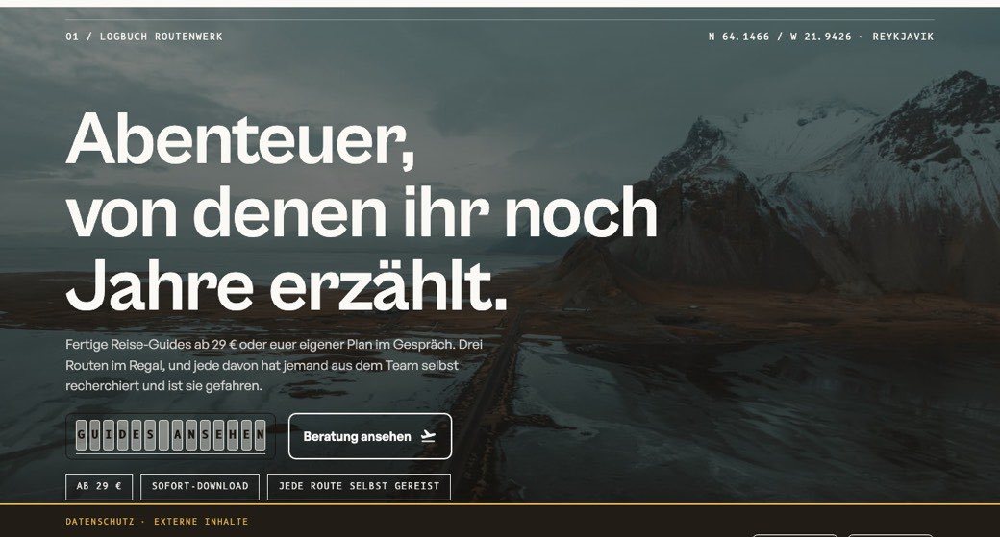
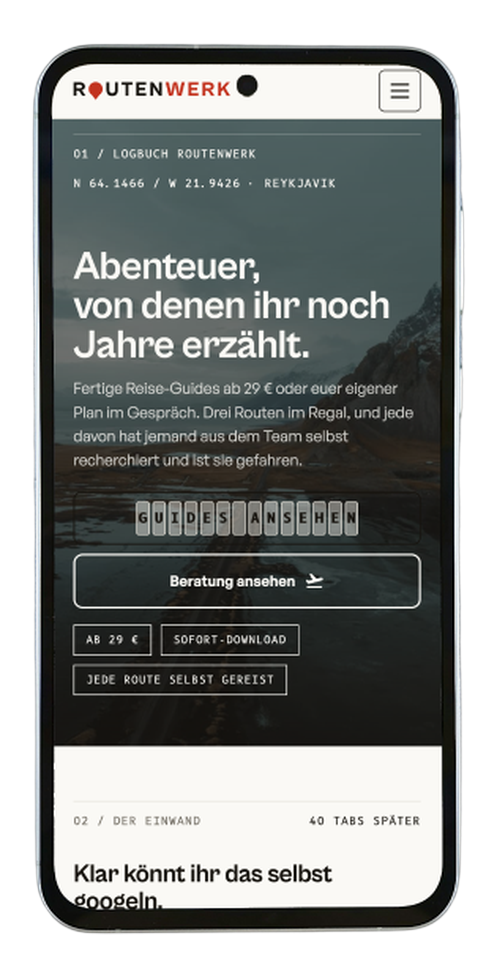

Nur Handy-Ansicht (Desktop bleibt die Collage). Jede Variante steht in einem 375px-Rahmen, so wie sie am Telefon aussieht. Bei Nr. 2 kannst du die Tabs „Desktop / Handy" wirklich antippen. Sag mir eine Nummer, dann baue ich sie in angebot.html ein.
Kein Überlappen mehr. Browser, Handy zentriert darunter, Text mittig in voller Breite, dann die Zahlen. Am ruhigsten und am besten lesbar.


Demo-Projekt ROUTENWERK auf Desktop und Handy, von mir von Hand gebaut. Unten live ausprobieren.
Ein Rahmen, Tabs Desktop / Handy, zeigt eine Ansicht. Antippen wechselt. Platzsparend und interaktiv, wie die echte Case-Study.
Demo-Projekt ROUTENWERK, live nachprüfbar. Tipp oben auf Desktop oder Handy.
Der Besucher ist am Handy: die Mobil-Ansicht groß als Held, Desktop nur als kleine Miniatur, Zahlen kompakt als Liste. Mobile-native gedacht.
So lädt Routenwerk auf dem Handy. Von mir von Hand gebaut, live ausprobieren.
Dieselbe Seite auf dem Desktop